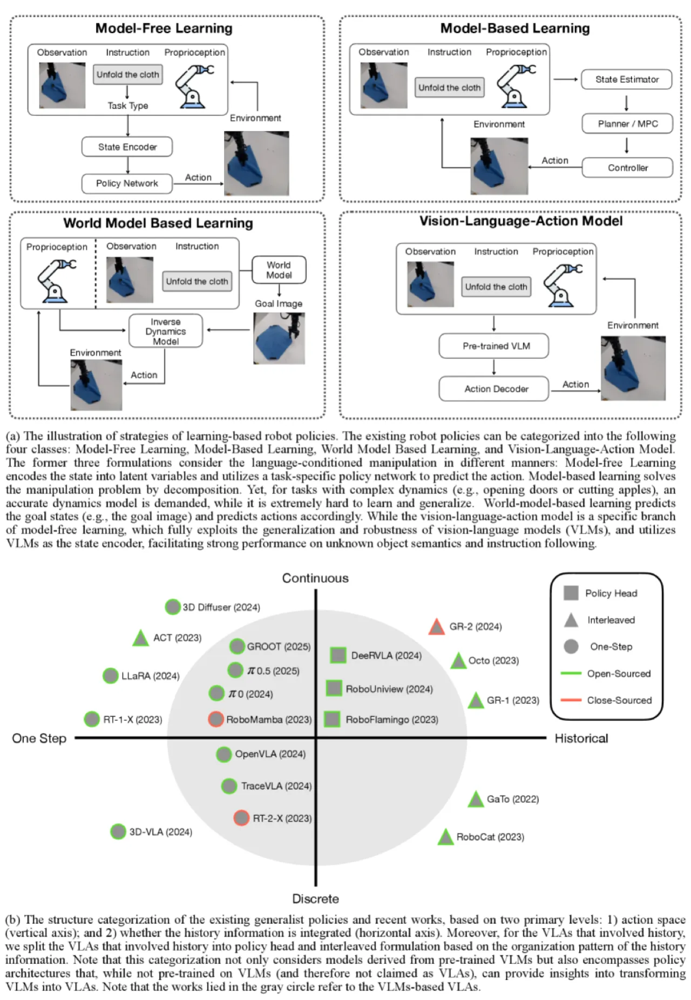
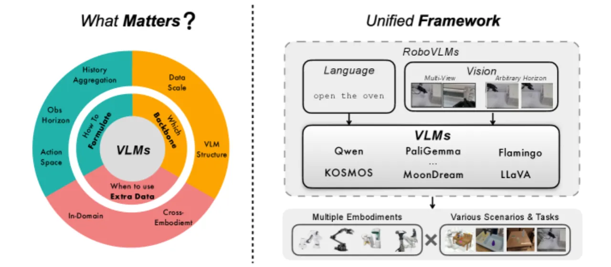
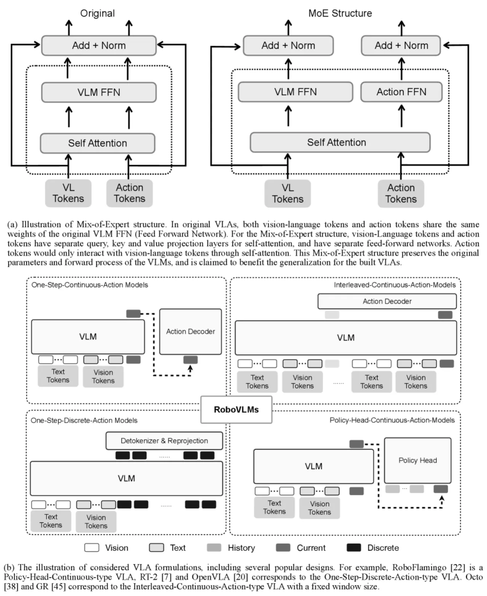
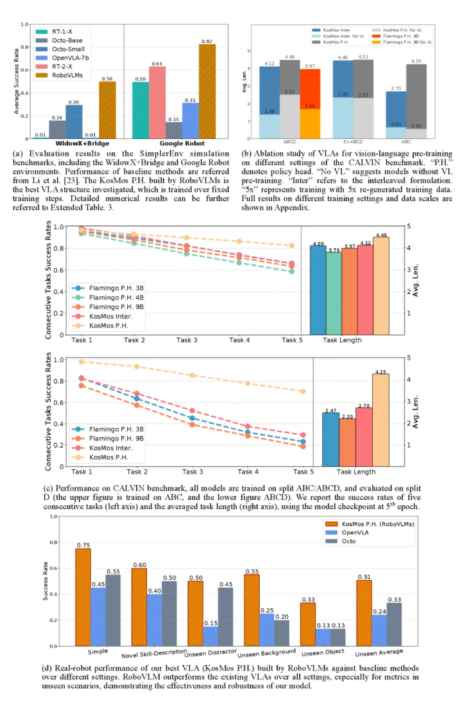
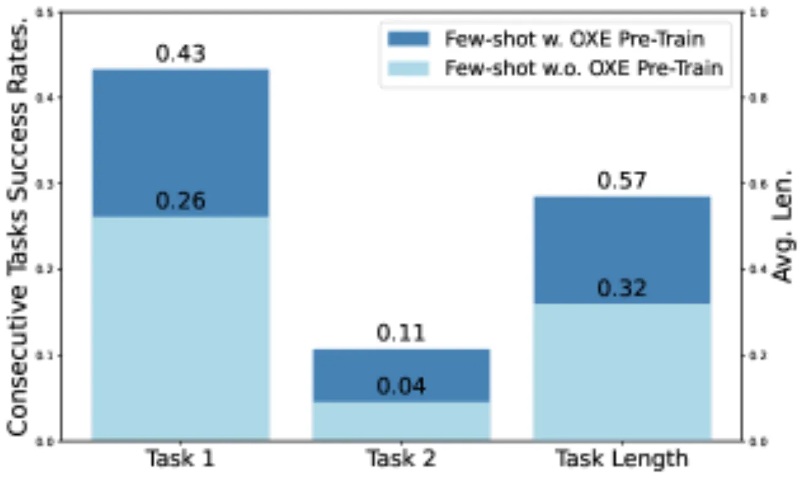

本文通过超过 600 组精心设计的实验，系统研究了构建 Vision-Language-Action (VLA) 模型的三大核心决策：VLM backbone 的选择、策略架构的制定方式，以及跨机体数据的整合策略，并基于实证结果提炼出最优设计准则，发布了 RoboVLMs 框架与配套数据集。
大型视觉语言模型（VLM）为通用机器人策略带来了新的可能，但如何将其转化为高效的 VLA 模型，业界缺乏系统性的实证研究——现有工作各自选择不同的 backbone、架构和数据策略，难以进行公平比较，也无法给出可推广的设计原则。
"We observe a significant gap between the performance of VLAs and expected performance of generalist robots, while the community lacks a systematic study covering all key design factors."

研究聚焦三个核心问题：

RoboVLMs 是一个高度模块化的实验框架，支持自由组合各类 VLM backbone 与策略架构。研究在统一的数据集和评测基准（CALVIN 仿真 + SimplerEnv + Kinova Gen3 真机）下进行所有对比实验，确保结论可靠。

实验涵盖 LLaVA、Flamingo、KosMos（8B）、PaliGemma（3B）等 8 种以上 backbone。研究发现，在大规模视觉-语言数据上充分预训练的模型（KosMos、PaliGemma）在机器人任务中表现"distinctively better"，而参数规模并不是决定性因素——3B 的 PaliGemma 与 8B 的 KosMos 表现相当。
动作空间使用 7 维向量（6-DoF gripper pose + open/close 状态），连续动作归一化至 [-1,1]，离散动作均匀划分为 256 bins。四种架构中，policy-head + continuous action 在 CALVIN 上达到最高平均完成长度（Avg. Len. 4.49），同时在 zero-shot 泛化中展现出最强鲁棒性。训练目标方面，Flow Matching "slightly outperforms MSE+BCE in all experiments"，但差距不显著。MoE 结构在 zero-shot 设置下有助于泛化，但在已见场景中无额外增益。
研究区分了 co-training（同时使用跨机体数据和领域内数据）与 post-training（先在跨机体数据上预训练，再用领域内数据微调）两种策略。实验表明，co-training 单独使用收益有限，而 post-training 在少样本（few-shot）场景中带来显著提升：单任务成功率提高 17.2%，平均完成任务数多 0.25。
实验在 CALVIN 仿真基准（ABC→D zero-shot 泛化，最多 5 步连续执行）、SimplerEnv（WidowX+Bridge、Google Robot）以及真实 Kinova Gen3 机械臂（105 个操作任务，74K 轨迹）上全面评测。
| Backbone | 1-task | 2-task | 3-task | 4-task | 5-task | Avg. Len. |
|---|---|---|---|---|---|---|
| LLaVA | 0.873 | 0.678 | 0.506 | 0.376 | 0.275 | 2.71 |
| Flamingo | 0.964 | 0.896 | 0.824 | 0.740 | 0.662 | 4.09 |
| PaliGemma (3B) | 0.984 | 0.933 | 0.888 | 0.835 | 0.779 | 4.42 |
| KosMos (8B) | 0.967 | 0.930 | 0.899 | 0.865 | 0.826 | 4.49 |
| 方法 | Pick Coke | Move Near | Open/Close | Overall |
|---|---|---|---|---|
| RT-1 (Converged) | 0.960 | 0.900 | 0.730 | 0.630 |
| OpenVLA-7b | 0.270 | 0.030 | 0.356 | 0.219 |
| RoboVLMs (Ours) | 1.000 | 0.910 | 0.544 | 0.818 |
| 训练目标 | 执行范式 | MoE | 1-task | 5-task | Avg. Len. |
|---|---|---|---|---|---|
| Flow Matching | Chunk | ✓ | 0.940 | 0.597 | 3.84 |
| Flow Matching | Chunk | ✗ | 0.910 | 0.573 | 3.68 |
| MSE+BCE | Chunk | ✗ | 0.933 | 0.688 | 4.04 |
| Flow Matching | First | ✗ | 0.898 | 0.544 | 3.56 |


数据规模消融（KosMos Policy-head）显示：从 0.1× 扩展至 1× CALVIN 数据，5-task 成功率从 17.6% 跃升至 82.6%；进一步扩展至 5× 仅带来边际增益（82.6% → 83.0%），说明更大的 VLM 具备更强的数据效率。
由于 attention masking 机制的限制，interleaved 历史建模只能应用于 decoder-only 结构的 VLM，不适用于 encoder-decoder 类模型，限制了该架构与更多 backbone 的组合可能。
实验显示，cross-embodiment pre-training 的增益主要体现在 few-shot 场景；在充足的领域内数据下，co-training 单独使用"does not consistently yield significant improvements in final performance"，说明跨机体数据的价值主要体现在数据稀缺时。
真实世界验证仅在 7-DoF Kinova Gen3（配 Robotiq 夹爪）上进行，结论能否迁移至其他机械臂、移动底盘或双臂系统尚未验证。
Policy-head 与 interleaved 架构在处理长历史序列时计算开销显著增加，实际部署中的实时性约束未作充分讨论。